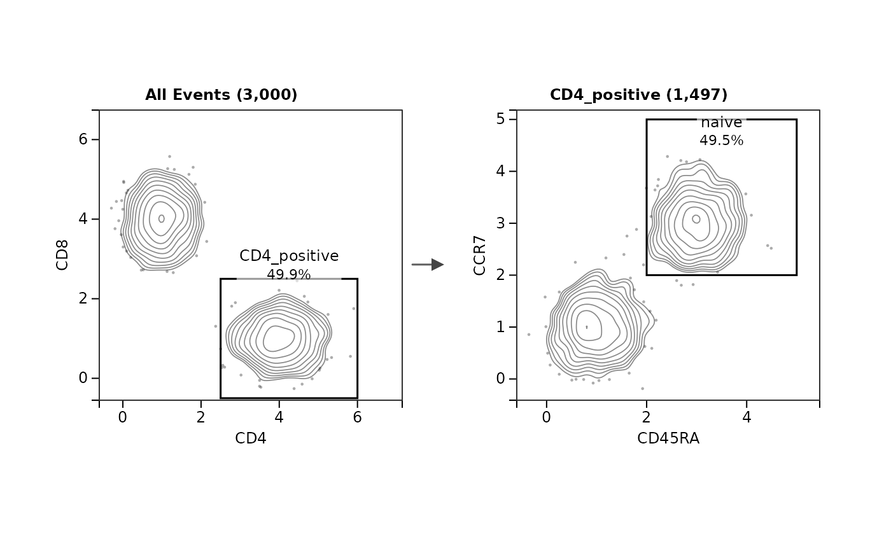

A gating strategy, drawn as GateLab's Strategy tab draws it
Source:R/strategy_plot.R
gatelabStrategyPlot.RdLays out the gating path to the populations asked for as GateLab's Strategy tab does in its
"Multiple pops" mode with the samples pooled: one panel per parent population and pair of
channels, showing the parent's events with every gate its children draw there, a column per
gating depth, and an arrow from each gate to the panel of the population it makes. Each panel
is a gatelabPanelGrob.
Usage
gatelabStrategyPlot(
sce,
populations,
hierarchy = NULL,
sample_column = "sample_id",
samples = NULL,
max_events = 10000,
global_scales = TRUE,
arrows = TRUE,
arrow_width = 1.5,
plot_size = 300,
pub_style = TRUE,
font_sizes = c(tick = 12, axis = 12, title = 12, gate = 12),
scale = 1,
allow_stale = FALSE,
membership = NULL,
assay = NULL,
...
)Arguments
- sce
A
SingleCellExperimentgated in GateLabR and saved with “Save to SCE”.- populations
Names (or ids) of the populations to trace. Their ancestors are drawn too. A name shared by several populations must be given as its id.
- hierarchy
A hierarchy name or id, as in
gatelabPopulations. The saved workspace holds the gates of the hierarchy that was active when it was saved, so only that one can be drawn:NULLdraws it, and naming another hierarchy is an error.- sample_column
The
colDatacolumn that names each event's sample, or a vector with one value per event.- samples
Samples to pool;
NULLpools every sample.- max_events
Events drawn per panel, shared between the samples by
gatelabDisplayEvents(the app's "Max events/panel").- global_scales
Use the workspace's global axis scales where it has them, as the app does.
FALSEfits every panel to its own events and gates.- arrows
Draw the arrows between panels.
- arrow_width
Arrow line width in pixels; the heads grow with it.
- plot_size, pub_style, font_sizes, scale, ...
Passed to
gatelabPanelGrob, with any of its other appearance arguments (point_size,bold_labels,quadrant_labels,contour_levelsand the rest).- allow_stale
Read memberships whose workspace revision is behind the stored workspace, as in
gatelabPopulations. The gates drawn are then those of the workspace as it is now, and the counts those of the earlier save.- membership
Population memberships to use in place of the stored ones: a logical matrix of events by population with the population names (or ids) as column names.
NULLreads the stored memberships withgatelabPopulations().- assay
The assay the gates were drawn on;
NULLtakes the one the workspace names, orexprswhen it names none.
Value
A grid gTree of class gatelab_strategy. Attributes: width and
height, the figure's size in inches; panels, a data frame with one row per
gate or quadrant drawn (panel, x_channel, y_channel,
parent_events, events_drawn, population, events,
percent_of_parent).
Details
Counts and percentages are of the pooled samples. A population made by one gate
takes its count from the stored memberships (gatelabPopulations), so it is
the app's own; a gate of a population made by several is counted from the gate's geometry,
as are quadrants no population was made for. That is exact where gates are stored in
display units, as on a SingleCellExperiment hosted on its transformed assay. An
event a population was not evaluated for, which gatelabPopulations() returns as
NA with a warning, is counted as outside it.
Events are drawn as the assay holds them and gates as the workspace holds them, with no transform applied. A workspace drawn on a linear assay, which the app shows through a transform, is not reproduced. The gates drawn are those of the hierarchy that was active when the workspace was saved: a file gated under a copy of the tree with coordinates of its own keeps its counts, which come from the memberships, but its own outlines are not drawn.
Axis ranges follow the app: a channel's global scale when the workspace sets one, else 5
percent of the drawn events' span below them and 20 percent above, widened to keep every
gate in view. The tree layout is the app's "Tree"; rows are not packed as tightly as the app
packs them when a branch has several children. A quadrant's shares are written in the
corners of its panel, and an arrow from a quadrant leaves from that corner;
quadrant_labels = "centre" writes them in the middle of each quadrant, as the app
does.
The strategy is a grid gTree of a fixed size. print() and plot() draw
it on a new page of the current device; open the device with the width and
height attributes to hold all of it.
See also
gatelabHierarchy for the populations of the stored hierarchy.
Examples
# A gated object comes from the app. This one is put together by hand, with the memberships
# of its two populations worked out here, so that the example runs without the app.
set.seed(1)
n <- 3000
cd4 <- rep(c(TRUE, FALSE), each = n / 2)
values <- rbind(
CD4 = ifelse(cd4, rnorm(n, 4, 0.5), rnorm(n, 1, 0.4)),
CD8 = ifelse(cd4, rnorm(n, 1, 0.4), rnorm(n, 4, 0.5)),
CD45RA = rnorm(n, rep(c(1, 3), n / 2), 0.4),
CCR7 = rnorm(n, rep(c(1, 3), n / 2), 0.4)
)
sce <- SingleCellExperiment::SingleCellExperiment(
assays = list(exprs = values),
colData = S4Vectors::DataFrame(sample_id = rep(c("D1", "D2", "D3"), length.out = n))
)
workspace <- list(
hostedAssayId = "exprs",
gating = list(
root_population_id = "root",
gates = list(
g1 = list(gate_id = "g1", name = "CD4 gate", gate_type = "rectangle",
x_channel = "CD4", y_channel = "CD8", color = "#e41a1c", label_offset = NULL,
vertices = list(list(2.5, -0.5), list(6, 2.5))),
g2 = list(gate_id = "g2", name = "naive gate", gate_type = "rectangle",
x_channel = "CD45RA", y_channel = "CCR7", color = "#377eb8", label_offset = NULL,
vertices = list(list(2, 2), list(5, 5)))
),
populations = list(
root = list(population_id = "root", name = "All Events", parent_id = NULL,
children = list("p1"), gate_refs = list()),
p1 = list(population_id = "p1", name = "CD4_positive", parent_id = "root",
children = list("p2"), gate_refs = list(list(gate_id = "g1", include = TRUE))),
p2 = list(population_id = "p2", name = "naive", parent_id = "p1",
children = list(), gate_refs = list(list(gate_id = "g2", include = TRUE)))
)
),
scales = list(globalScales = list()),
display = list()
)
S4Vectors::metadata(sce)$gatelab_workspace <- list(
workspace_json = as.character(jsonlite::toJSON(workspace, auto_unbox = TRUE, null = "null"))
)
between <- function(channel, low, high) values[channel, ] >= low & values[channel, ] <= high
in_cd4 <- between("CD4", 2.5, 6) & between("CD8", -0.5, 2.5)
in_naive <- in_cd4 & between("CD45RA", 2, 5) & between("CCR7", 2, 5)
strategy <- gatelabStrategyPlot(
sce, "naive",
membership = cbind(CD4_positive = in_cd4, naive = in_naive),
max_events = 2000
)
attr(strategy, "panels")
#> panel x_channel y_channel parent_events events_drawn population
#> 1 All Events CD4 CD8 3000 2000 CD4_positive
#> 2 CD4_positive CD45RA CCR7 1497 1497 naive
#> events percent_of_parent
#> 1 1497 49.9
#> 2 741 49.5
plot(strategy)

if (FALSE) { # \dontrun{
# On an object gated in the app and saved with "Save to SCE", the memberships are the stored
# ones, and the figure is saved at its own size:
strategy <- gatelabStrategyPlot(sce, c("naive", "effector_memory"))
grDevices::pdf("strategy.pdf", width = attr(strategy, "width"), height = attr(strategy, "height"))
plot(strategy)
grDevices::dev.off()
} # }